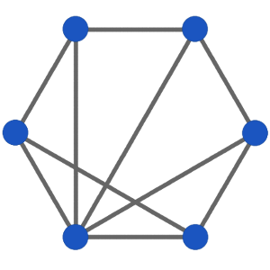

Politics, Programming, Data and the Drogulus
(This article is based upon a short talk I gave at Opentech 2013.)

I'm going to describe the drogulus: a programmable peer-to-peer data store that I've been hacking on in my spare time.
The problem I have is a growing unease with the current state of the web. This unease can be summed up in three ways:
- On the web, users are no longer in control of their data or online identity. They're locked in to websites that act as walled gardens of data each of which requires different credentials in order to log in. Once logged in there is often no way to extract data. Furthermore, how can we tell who's who? Is user X on Twitter the same user X on Facebook?
- Programmers have to build stuff on the web using complicated and quirky technology defined in a top down manner by committee. Just watch any web developer grimace if you mention OAuth, CORS, Javascript date objects or (dare I say it) Internet Explorer.
- There are many inadvertent points of control, lock-in and authority built in to the web - each of which is a potential mechanism for dis-empowerment and exploitation. Just look at the great firewall of China, the censorship of the Piratebay here in the UK or the kerfuffle over payment to Wikileaks.
The beautifully simple, open and decentralised hypertext system envisioned by Tim Berners-Lee has grown in to a closed, centralised and complicated monster beholden to dodgy commercial, political and legal manipulation. More worryingly still, our data is analyzed by companies, sold via targeted advertising or handed over to governments without our consent.
Unfortunately, many aspects of today's web are contrary to a concept that is very important to me: autonomy.
When someone is autonomous they are self-directing, free to act of their own accord and lack imposition from others. Autonomy also suggests intelligence and awareness enough to be able to enjoy and make use of such freedom. Furthermore, such intelligence entails decision making so people become accountable for their actions. Autonomy is also the opposite of such undesirable states as tyranny, slavery, ignorance and apathy.
I asked myself, how would software designed to promote autonomy function? I started to hack and the drogulus was born.
The drogulus is a speculative exercise in peer-to-peer decentralisation, a political statement (it promotes a certain point of view about technology's role in society) and is a place for me to explore fun ideas that have been knocking around in my head for a while.
I tell myself, "it'll all come to nothing" but I'm having too much fun to stop, so I want to tell you about the drogulus to give you a sense of why I find it so fascinating.
So, how is the drogulus designed to promote digital autonomy?
It's a global federated, decentralized and open data store that can be programmed by anyone. Identity and provenance is ensured by cryptographically signing digital assets.
Being federated (the system consists of many independent but collaborating entities) and decentralized (no entity is more important than the others) ensures users are free from choke points of authority that may be used to control access to data and usage of the system.
Being an open system means all users are free to contribute, change, enhance and expand the system without prejudice.
Being programmable means users can do something with the data stored within the drogulus. It's a sort of distributed programming environment. Imagine it as a re-configurable SETI@home on steroids: by running a node in the drogulus network you are sharing a small amount of your potential computing power with everyone else on the network.
By using public key cryptography the drogulus ensures the provenance of the data and that it has not been tampered with. Importantly, there is no central authority to prove who's who. Identity is built on the far more humane mechanism of a web of trust.
So how does it work? Well, there are three simple core components:
- A distributed hash table (DHT) that provides the data store and allows users to find each other.
- Trust and identity enforced by the afore mentioned cryptographic signing of digital assets.
- Logos (λόγος), a simple Lisp like programming language for asynchronously working with data stored in the distributed hash table.
Each component promotes autonomy in the following ways:
A distributed hash table works like a sort of peer-to-peer dictionary: a unique key is used to identify a value. In the case of a traditional dictionary, the key is a word and the value is its definition. Being a data store, the distributed hash table allows users to create, retrieve, update and delete their own keys and associated digital values.
The hash table is distributed because it is split in to the equivalent of many volumes of a traditional dictionary. Each person who ever uses the dictionary has a copy of just one volume with many copies of the same volume being distributed to many different users.
Users keep track of which of their friends on the network hold what volume. Users interact with the distributed hash table by contacting the friend with the correct volume for the desired item. If they don't know anyone with the right volume they play a sort of six-degrees-of-separation game with their friends until someone with the correct volume is found.
Distributed hash tables also share an interesting property with Bittorrent: the more popular an entry is the more widespread it becomes, thus improving performance since popular items are easier to find.
The drogulus implements a version of the Kademlia distributed hash table algorithm. The innovation the drogulus brings is that keys and values are signed in such a way that their provenance can be proven and content shown to be intact. Furthermore, users cannot interfere with each other's items stored within the distributed hash table unless they have access to the same private key.
Items are self contained and any that do not pass the cryptographic checks are ignored and nodes on the network that attempt to propagate such values are punished by being blocked by their peers.
Programming the drogulus is done via Logos, a homoiconic language: this means code and data are the same thing in Logos. This has the interesting mind-bending side effect that Logos programs can rewrite other Logos programs in order to extend the Logos programming language itself. This is an important property: users have the autonomy to grow the Logos programming language to suit their own needs.
Since Logos programs are also data they are stored as values within the distributed hash table so users can re-use each other's code.
They run in asynchronous "ensembles" on other nodes in the drogulus network. The result is delivered when the ensemble eventually arrives at a consensus. To protect peers, Logos programs are sandboxed and intentionally limited in terms of time (how long they can run for) and space (how much memory may be used).
At each point in hacking together the drogulus I've tried to build a solution whose outcomes reflect my ethical and political considerations: a focus on autonomy and openness and the removal of authority and choke points.
Unfortunately, the drogulus is unfinished! Currently, the distributed hash table is almost done, the cryptographic layer is finished and Logos is in the advanced planning stages with some experimental code written.
It's early days and I realise that there are potential contradictions and problems that I've not worked out, nor is there anything useful that can be achieved with the drogulus at this moment in time. Because I'm working at such an abstract level it's hard for me to comprehend what use others may find for a programmable peer-to-peer data store. That's why I wanted to present the drogulus in its current incomplete state: to gauge what sort of reaction (if any) it might get.
I'll finish by pointing out that in 1996 William Gibson described the web as merely the test card for 21st century technology. I'd like to think we can do better than the web. Thinking outside its confines has been a liberating experience and I'd encourage everyone to do the same. Obviously the drogulus is the rough and ready result of such pondering by me.
We'd only have ourselves to blame if we don't imagine and build something better than the test card that is the web. After all, if there's one thing that the web has taught us, it is that engineering software is a far more useful, tangible and easier agent of change than traditional means of political engagement.
The code is on GitHub and I've created a simple website that explains things further. If you have any questions please drop me an email.
Thanks!
EDIT: Most of the technical questions I was asked resulted in me saying, "I don't know". I consider this a good thing. It was interesting that someone picked up on etymological fun I've been having with this project. ;-)
EDIT 2: I've attempted to give considered answers to the questions raised at Opentech in this blog post.
Image credits: © the author.